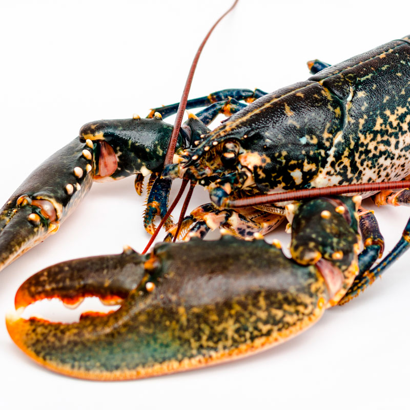
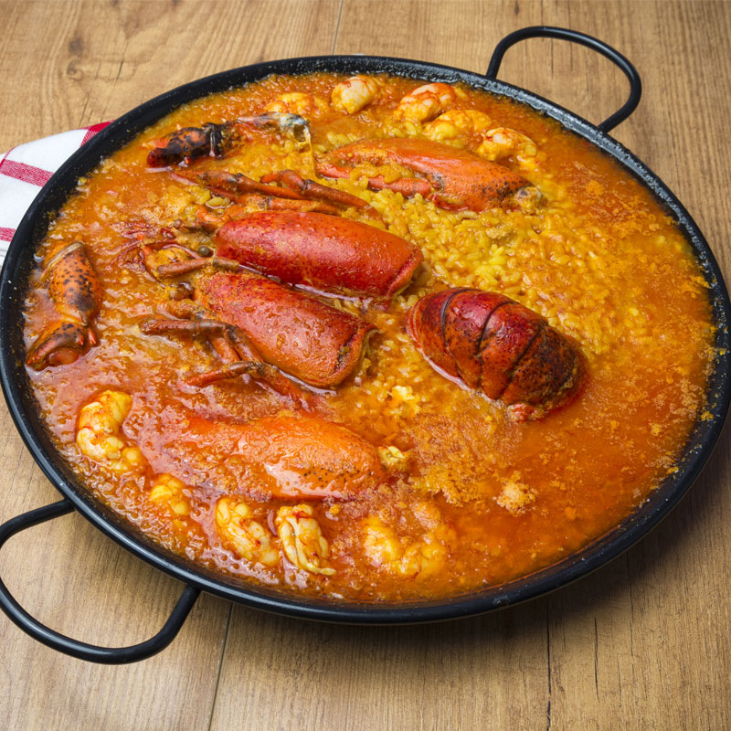
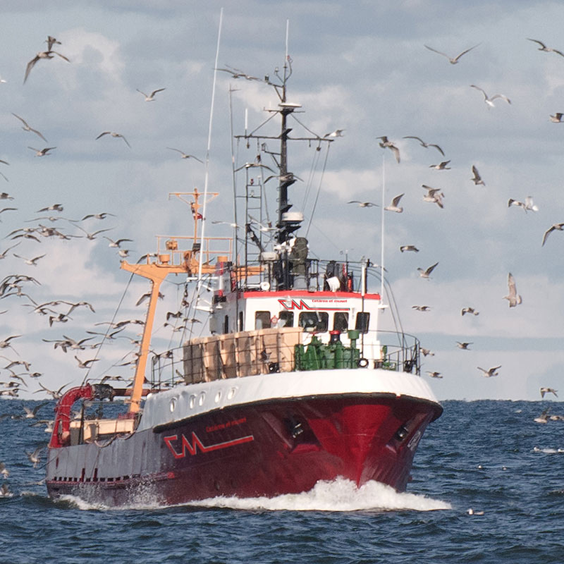
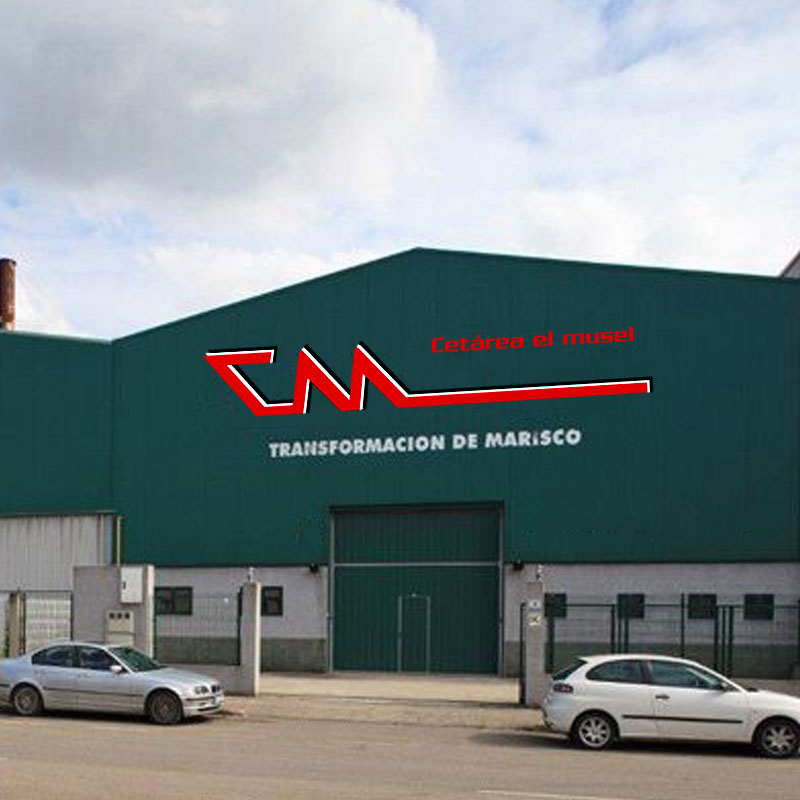

Beneficios de comer pescado y marisco
Son fáciles de cocinar y admiten multitud de preparaciones.
Más información ›Disfruta en tu plato del mejor marisco del Cantábrico, recién faenado, fresco, jugoso, lleno de vida para tus comidas en casa o para tus clientes más exigentes.
En Cetárea El Musel te traemos los tesoros del mar recién pescados. Más de 20 años de experiencia llevando los mejores mariscos a nuestras instalaciones, que cuentan con modernos viveros refrigerados con piscinas de agua de mar y oxígeno.
Conocemos nuestra profesión porque la vivimos con pasión. Somos respetuosos con las normativas vigentes y aplicamos un riguroso plan de control y seguimiento de las piezas desde que salen del agua hasta que llegan a las manos del cliente.
Contamos con flota propia de barcos y transporte especializado isotérmico. Es nuestra seña de identidad: del mar a la mesa con todas las garantías. Apostamos por la pesca responsable, cuidamos nuestras aguas y nuestro entorno y respetamos las tallas mínimas fijadas en la legislación.
En Cetárea El Musel estamos a tu lado, listos para servirte.
¿Sabes qué razones nos hacen más fuertes?
El marisco más fresco en tu mesa
Las entregas más eficaces y seguras
Y los controles periódicos de calidad
Estos tres ejes son nuestros pilares, la base que garantiza la calidad de nuestros productos. Nuestro negocio se basa en la venta de crustáceos vivos y los controles son fundamentales en toda la cadena logística. Importamos también el mejor producto de los principales puertos europeos para que los mariscos lleguen en perfecto estado a mayoristas, restaurantes, supermercados y clientes particulares.
Queremos ser el socio estratégico de tu negocio. ¿Estás interesado? Cuéntanos tus necesidades y te entregaremos el mejor marisco con nuestra propia flota de camiones vivero refrigerados.
Trabajamos para dar a nuestros clientes servicios de calidad

Fresco, de la máxima calidad, listo para servir

Platos sencillos pensados para ti. Disfruta con nuestro marisco

Pescamos, envasamos, transportamos… todo, porque la calidad es nuestro compromiso

La mejor tecnología al servicio del marisco
Son fáciles de cocinar y admiten multitud de preparaciones.
Más información ›
Uno de los platos más apreciados en la alta cocina.
Más información ›

El centollo es un crustáceo de la familia de los cangrejos.
Más información ›